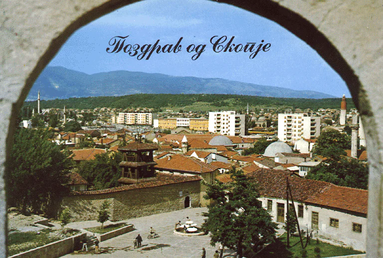
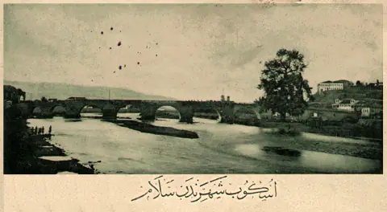

Sveti Spas
- Produkcija
- UFUŽ in Dokumentarni film Praga
- Scenarij in režija
- Slavko Janevski in EMAN CANERA
- Leto
- 1959
- Trajanje
- 00:31

Cerkev Sv. Pantelejmona nad vasjo Gorno Nerezi, jugozahodno od Skopja. Postavil jo je Aleksij Komnen iz rodbine Komnenov leta 1164. Do danes se je ohranil napis na marmornem prekladi ob prehodu iz narteksa v naos. Stavba je enoladijska, iz kamna in opeke, z osmerokotno osrednjo kupolo in štirimi majhnimi štirikotnimi kupolami na vogalih. Cerkev je najstarejši bizantinski spomenik ne le v Skopju, ampak v vsej Makedoniji. Poslikana je bila takoj po gradnji. Pozneje, v 15., 16. in 19. stoletju, je bila znova poslikana, a prvotne freske jo delajo za izjemen spomenik.


Sv. Bogorodica, zgrajena leta 1835. Stala je na levem bregu Vardarja. Kaže vplive bizantinske arhitekture, z baročnimi sodobnimi mestnimi elementi v obdelavi prostora. Pogorela je med drugo svetovno vojno. Do takrat je bila stolna cerkev mesta, nato je to postala cerkev Sv. Dimitrija. (1920-a leta)

Cerkev Sv. Bogorodice - 1920-a leta.

Shod ljudstva na praznik vidovdan, na dvorišču cerkve Sv. Bogorodice - 1919.

Cerkev Sv. Dimitrija je bila zgrajena v 18. stoletju na mestu srednjeveške cerkve Sv. Dimitrija. Popravljena je bila v letih 1886-94, ko sta nastala ograja in zvonik. Do leta 1980 je bila stolna cerkev. Stoji na levem bregu Vardarja blizu Kamnitega mostu (1920-a leta).

Cerkev Sv. Dimitrija - 1930-a leta.

Skopska metropolija. Stala je na nabrežju na levi strani Vardarja - 1920-a leta.

Glavna ulica med nastajanjem (danes ulica „Makedonija“, ki poteka od današnjega Muzeja mesta Skopje proti Kamnitemu mostu). Desno se vidi katoliška cerkev (Dom Sv. Marte) v gotskem slogu, levo pa posamezne stavbe. Zgrajena je bila z donacijo avstrijske vlade. Del ulice pri Kamnitem mostu je bil tlakovan leta 1911, da je lahko šel mimo sultan Murat V., ki je obiskal Skopje pred odhodom na Kosovo polje.

Katoliška cerkev v gotskem slogu, zgrajena na začetku 20. stoletja - 1920-a leta.

Glavna ulica proti trgu. V ospredju je katoliška cerkev. (1950-a leta)

Glavna ulica v smeri železniške postaje (današnji Muzej mesta Skopje). Levo se vidi katoliška cerkev. (1950-a leta)

Zvonik cerkve Sv. Spasa - 1910-a leta.

Cerkev Sv. Spasa stoji nasproti skopske trdnjave - Kale. Postavljena je bila konec 17. stoletja. To je majhna cerkev, napol vkopana v zemljo. Odlikuje se z eno najstarejših in najlepših oltarnih pregrad, izdelano v lesu z globoko rezbarijo, delom bratov Frčkovski iz Galičnika: Petreta kot vodje, Marka in Makarija. Upodobljeni so na desni strani ikonostasa. Ikonostas je nastal v letih 1814-1824. Fotografija je iz 1920-ih let.

Dvorišče cerkve Sv. Spasa. Fotografija je nastala v 1930-ih letih.

Panorama Skopja. Spodaj v ospredju je cerkev Sv. Spasa - 1970-a leta.

Cerkev Sv. Jurija - v četrti „Čair“ - 1930-a leta.

Cerkev „Sv. Konstantin in Sv. Helena“. - 1930-a leta.

Tempelj slave in vojaško pokopališče iz balkanskih vojn. Posvečen leta 1928. (1930-a leta)

 Akvadukt4 razglednice
Akvadukt4 razglednice Kale30 razglednic
Kale30 razglednic
Mostovi60 razglednic Nabrežje58 razglednic
Nabrežje58 razglednic Trg46 razglednic
Trg46 razglednic Stavbe66 razglednic
Stavbe66 razglednic Krščanski templji19 razglednic
Krščanski templji19 razglednic Muslimanske stavbe33 razglednic
Muslimanske stavbe33 razglednic Oficirski dom29 razglednic
Oficirski dom29 razglednic Gledališče28 razglednic
Gledališče28 razglednic Železniška postaja13 razglednic
Železniška postaja13 razglednic Šole36 razglednic
Šole36 razglednic Parki12 razglednic
Parki12 razglednic Tržnice18 razglednic
Tržnice18 razglednic Ulice38 razglednic
Ulice38 razglednic Panorama I60 razglednic
Panorama I60 razglednic Panorama II30 razglednic
Panorama II30 razglednic Kolaži55 razglednic
Kolaži55 razglednic Poplave9 razglednic
Poplave9 razglednic Potres27 razglednic
Potres27 razglednic Skopje 200026 razglednic
Skopje 200026 razglednic